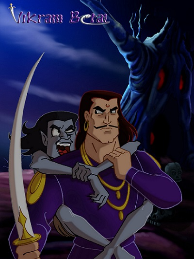

|  |
TALES OF KING VIKRAM AND BETAAL THE VAMPIREThe stories of TALES OF KING VIKRAM AND BETAAL THE VAMPIRE is an icon of Indian storey telling, a brain teaser. Although there are 32 stories 25 are covered in Betal Panchisi. I will be sharing with you shortly, some of the stories that are available with me. I am sure, after some time my colleague will definitely let me know the stories which I could not lay hand and help me in deavoring my efforts. |
Baital PancsihiA very famous account of human and vetal interaction is chronicled in the Baital Pancsihi ('Twenty Five Tales Of The Vampire) which consist of twenty five tales chronicling the adventures of King Vikramaditya and how his wits were pitted against a vetal a sorcerer had asked him to capture for him. Vetals have great wisdom and insight into the human soul in addition to being able to see into the past and future and are thus very valuable acquisitions to wise men. This particular vetal inhabited a tree in a crematorium/graveyard and the only way it could be captured was by standing still and completely silent in the middle of the graveyard/crematorium. However, every single time the king tried this vetal would tempt him with a story that ended in a question the answering of which King Vikramaditya could not resist. As a result the vetal would re-inhabit the tree and the king was left to try again. Only after relating twenty five tales does the vetal allow the king to bear him back to the sorcerer, hence the name Baital Pancsihi.The vetal informs the king of the treacherous sorcerers' true intentions. The sorcerer means to trick Vikramaditya, possessor of thirty two virtues, and sacrifice him to a Goddess which would give him control over the vetal and his kind. The vetal advises the king to ask the sorcerer how to pay his respects to the Goddess (which the sorcerer would ask him to do and use this opportunity to sacrifice him) and behead him while he is distracted. On following the vetal's advice the king is blessed and granted a boon by Lord Indra. The king wishes2 the sorcerer to come back to life and wishes that henceforth he would have the help and advice of the vetal whenever he needed it.The Baital Pansihi was originally written in Sanskrit and is said to be the inspiration for the Arabian Nights and subsequent collections of fantastic mythological tales. |
| Index | Next |